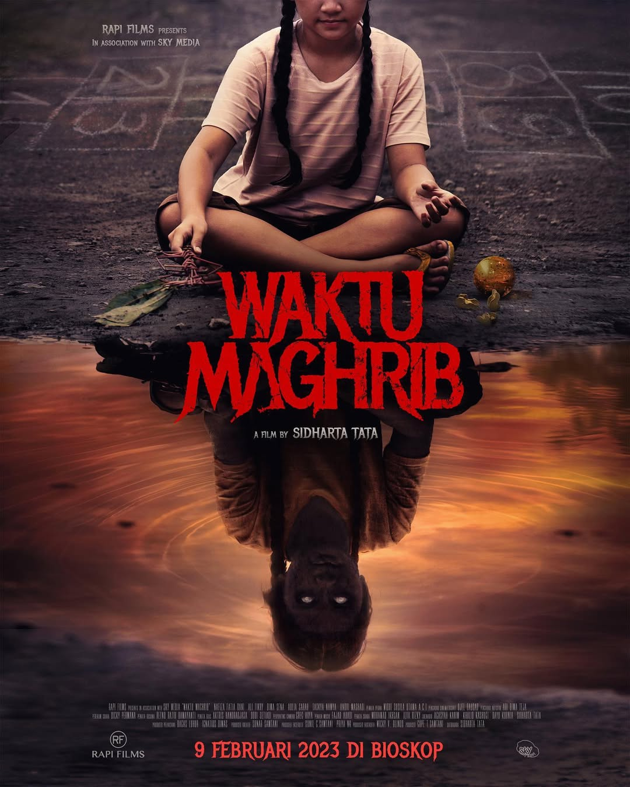

Waktu maghrib
-
Deskripsi Singkat: Film ini merupakan horor Indonesia yang mengangkat mitos larangan keluar rumah saat waktu maghrib. Ceritanya menyoroti akibat dari ucapan dan perilaku buruk anak-anak yang berujung pada teror gaib.
-
Aktor Pemeran Utama: Ali Fikry, Nafiza Fatia Rani, Bima Sena
-
Pengarang Cerita: Khalid Kashogi
Sutradara: Sidharta Tata
-
Rating:
-
Sinopsis: Cerita berfokus pada sekelompok anak di sebuah desa yang sering berperilaku nakal dan berkata kasar. Suatu hari, saat waktu maghrib, mereka mengucapkan kata-kata buruk yang seharusnya tidak diucapkan.
Sejak saat itu, mereka mulai mengalami gangguan dari makhluk gaib yang meniru dan memperkuat hal-hal negatif yang mereka lakukan. Teror tersebut semakin lama semakin berbahaya dan sulit dihentikan.
Orang-orang di sekitar mereka harus mencari cara untuk menghentikan gangguan tersebut sebelum memakan korban lebih banyak.